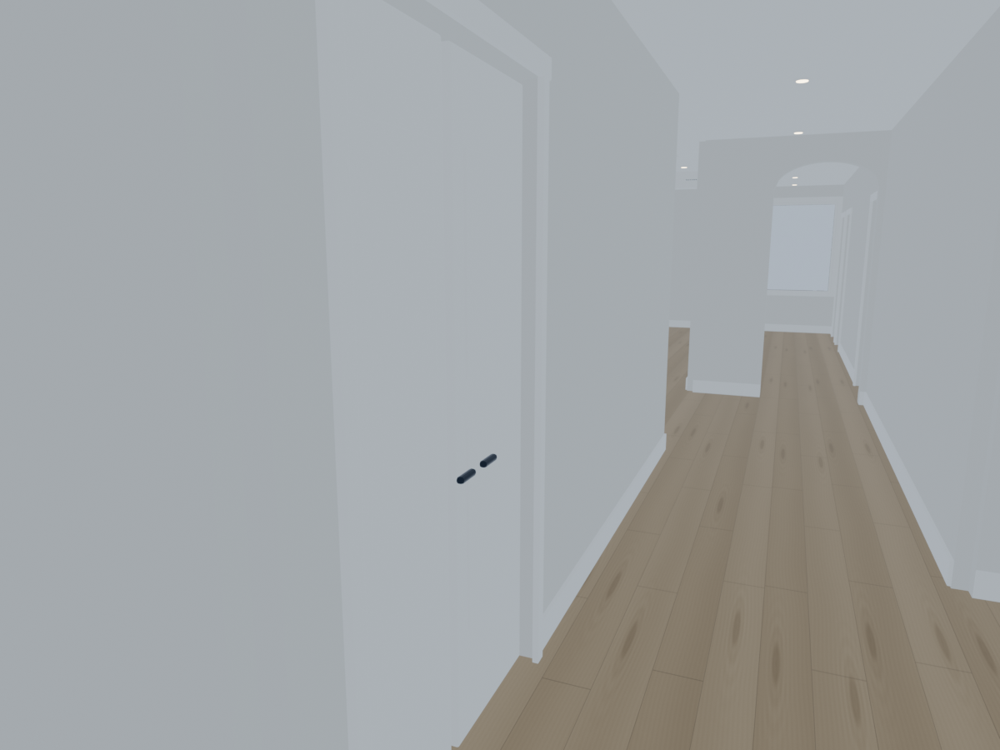
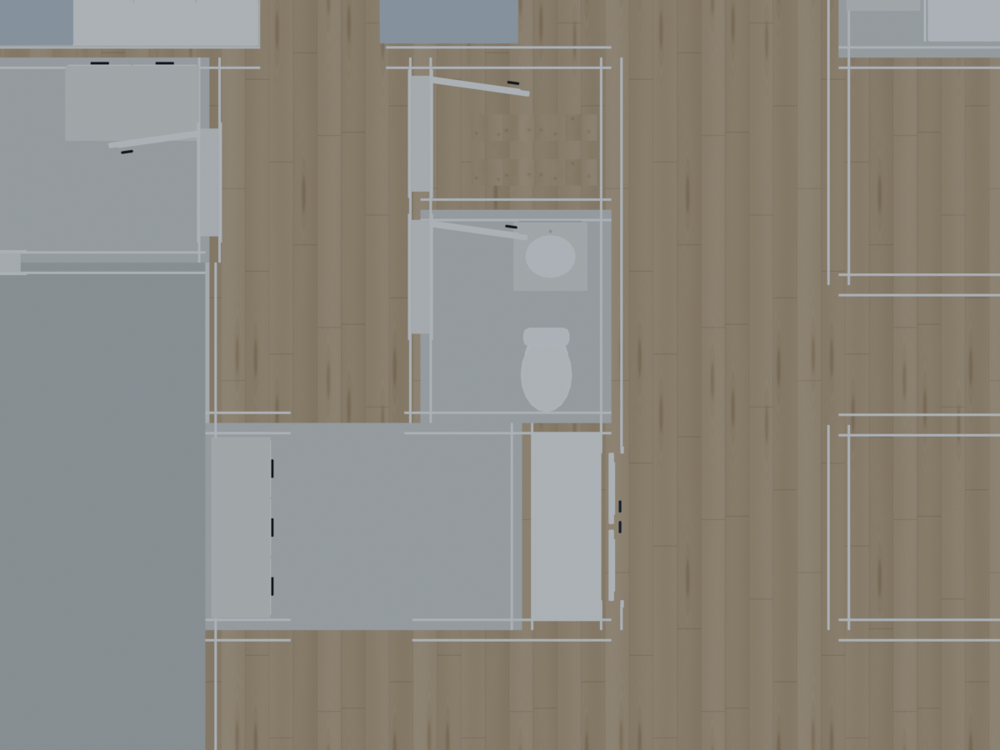
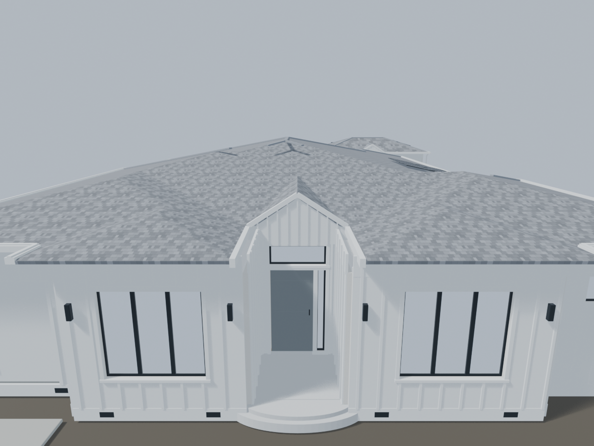
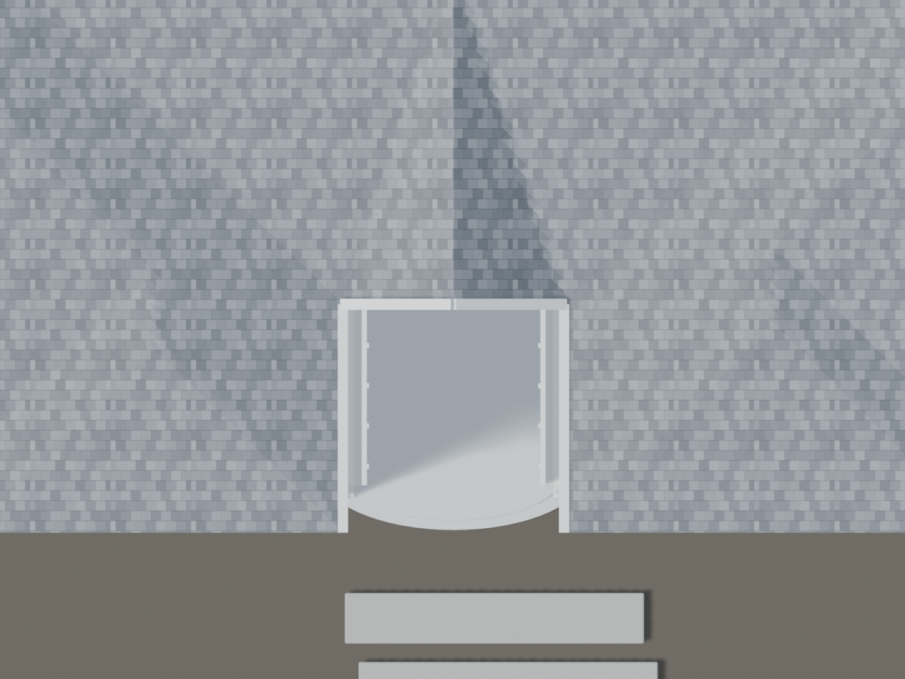

← Compare the roomsCorrecting the underlying house.
Based on the supplied floor plan, hallway photograph and entrance roof references. The rear corridor remains a fixed window with a 0.76 m sill.
The closet opens into the hall
The paired doors are on the left as you enter. The pantry side is now a solid partition.

An open service route
Both ends of the butler’s pantry are open passages, preserving the connection from the dining room toward the kitchen and great room.

The gable returns to the door
The small gable is aligned with the entrance wall. The front door, sidelight and separate transom remain.

The porch recess stays open
The main roof no longer spans the recessed front porch. The local junction remains a photo-guided approximation.
